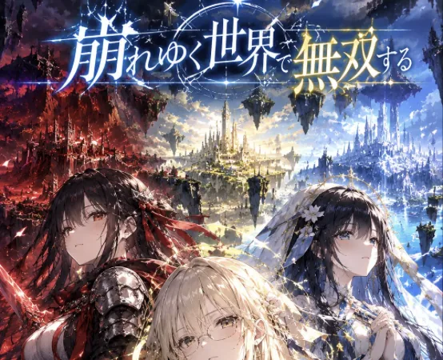
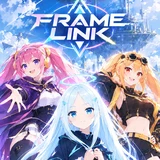
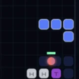
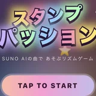

読む・聴く・遊ぶ。小説と音楽とゲームを、ひとつの場所に。

NEWPICK UP · GAME
崩れゆく世界で無双する
魔物に呑まれていく3つの国へ、運命の外から駆けつける援軍になる、10出撃の無双サバイバル。
遊ぶNOVEL小説作品
MUSIC · SUNO AI音楽作品
GAMEゲーム作品
崩れゆく世界で無双する
魔物に呑まれていく3つの国へ、運命の外から駆けつける援軍になる、10出撃の無双サバイバル。機体を育てて進化させ、タップの「波動」で群れを吹き飛ばし、戦死（予定）だったヒロインたちを生存へ書き換える。

FRAME LINK
3人のヒロインから相棒を選び、機体を組んで戦う縦スクロールシューティング。ボスに負けて編成を練り直し、7段階の難易度を登っていく。戦闘中は2つの編成を切り替えられる。

BLOCK DEFENSE
落ちてくるブロックを組んでタワーへと変え、無限に押し寄せる敵から拠点を守る「落ちゲー × 無限タワーディフェンス」。レベルアップ、オンラインランキング、日本語/English対応。
ミニゲームコーナー
1分で終わる、ちょっと変わったミニゲームを集めたコーナー。すきま時間にどうぞ。

スタンプパッション
バスドラとスネアでリズムを刻み、まんなかのスタンプで盛り上げるリズムゲーム。Suno AIで作った曲から選んで遊べます。演出ひかえめの「集中」と、紙吹雪と花火の「パッション」の2モード。うまくなるほど、画面が青から虹色へ育っていきます。